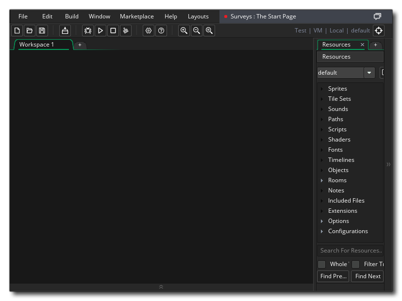
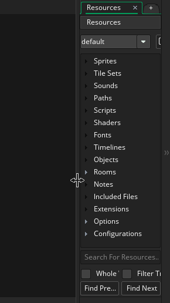
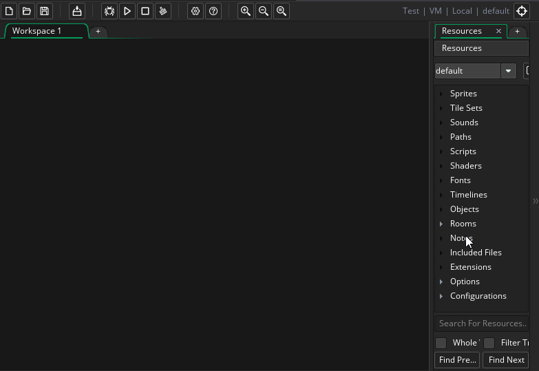

The workspace is the name we give to the main area in the middle of the window where you will be doing the bulk of your work. There are different types of workspace too, but we'll cover that a bit more later. On the right of the workspace we have the Resource Tree, which lists all the different elements your project can use, like sprites, or objects, or rooms. We will explain what each resource type is as we come to it in the tutorial, but we won't be covering all of them. 
It's worth noting that the resource tree is considered to be docked to the side of the window, and it can be opened or closed using the dock buttons:

and it can also be moved to a different screen position and docked there (for example on the left):

GameMaker Studio 2 is fully customisable, so you can change the colours and fonts, or even set window layouts and save them. That aspect of the program won't be discussed in this tutorial and we'll be using the default layout, but you can find more information on customisation in the manual (press  ).
).